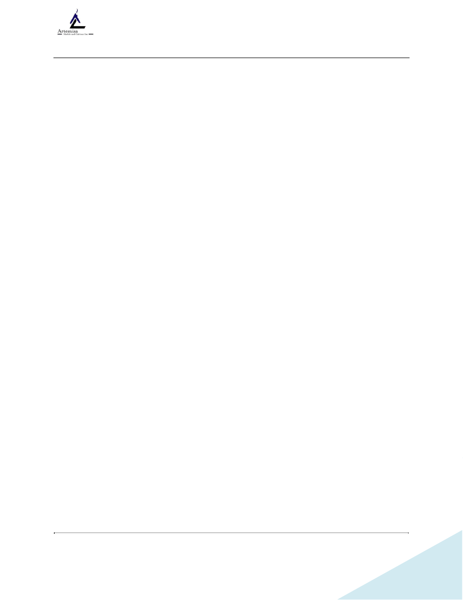

SOP VEIN AND BOOK MATCHING
Revisión 6/16/2026
Page 1 of 12
SOP – VEIN AND BOOK MATCHING
I.
OBJETIVO
Establecer un procedimiento estandarizado para la inspección, documentación fotográfica,
evaluación y aprobación del diseño de vetas (Book Match y Vein Match) antes del inicio de la
fabricación, garantizando el mejor aprovechamiento estético del material y la aprobación formal
del cliente.
II.
ALCANCE
Aplica para:
•
TV Walls
•
Feature Walls
•
Chimeneas
•
Shower Walls
•
Waterfalls
•
Kitchen Islands
•
Countertops
•
Full Height Backsplash
•
Vanity Walls
•
cualquier proyecto donde la continuidad visual del stone sea un factor importante.
III.
DEFINICIONES
Book Match
Disposición espejo de dos o más slabs consecutivos para obtener un patrón perfectamente
simétrico.
Es una técnica donde dos (o más) slabs consecutivos son abiertos como si fueran las páginas
de un libro.
Generalmente provienen del mismo bloque de piedra.
Cuando el segundo slab se gira 180°, las vetas forman una imagen espejo perfectamente
simétrica.